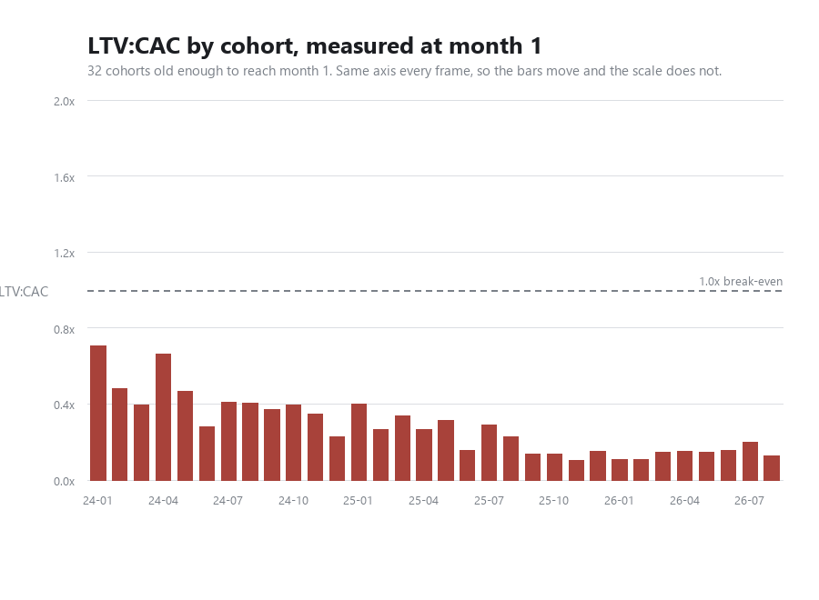

1. LTV:CAC by cohort, at equal age
2. Expected payback by cohort
3. Cumulative gross profit against cost, by cohort age
4. Blended retention curve, logos against revenue
5. Monthly logo churn rate
6. Retention at months 3, 6 and 12, by cohort
One line per age, against the month a cohort started. A cohort joins a line only once that age is behind it, so the lines end at different points and the right hand end of each is the newest cohort old enough to be judged. Retention here is survival: once a customer has gone they stay gone, so a line can only fall.
7. Cost per logo against revenue per logo
8. Retention curve by era
9. Monthly logo flows
10. Logos kept, this year against last year
11. Revenue kept, same customers and same windows
12. Price at signup against volume
13. What each price band actually returns
14. Onboarding: how many are charged, and how much
15. How a month starts: start type mix
16. Break-even month by cohort
Forward churn
A cohort curve follows one intake as it decays. These follow the whole base from a standing start: take everyone active in a month, and see how many are still there four months later. That is the number that moves revenue, and it can be asked of every month rather than only of new arrivals.
17. Forward survival, from every starting month with a full window
18. Survival by starting month
19. Customer Success capacity against churn
20. Is either relationship moving?
21. Does churn rise when fewer customers arrive?
The same questions, animated
Three of the charts above have a dimension that will not fit in one frame. These hold both axes fixed and move only the thing being varied, so a point that shifts has really shifted rather than being rescaled. They are redrawn from the data on every push, so they cannot fall behind the page.
22. Churn against arrivals, one to six months

The cloud lifts as the horizon lengthens and never tilts. Churn accumulates, and it accumulates about equally across the whole range of intake volumes. On axes that rescaled each frame every panel would look much the same and none of that would be visible.
What acquisition costs
Every line the pipeline counts as acquisition, by month, with the logo count and the cost per logo underneath it. Partnerships is the one split line that reaches this total, at 100%; Customer Success is settled at 0% and Technical Account Manager sits in cost of sales, so neither appears.
23. LTV:CAC as cohorts mature

The recent cohorts stay below the older ones at every age they can both reach. That is the part the static chart cannot show: there, a 2024 cohort has had two years to return its cost and a 2026 one two months, so the slope is mostly the calendar rather than the business.
The same measure as chart 1, animated across the age its slider sets. The axis is held at 0 to 2.0x in every frame; if each frame rescaled to its own data the bars would look much the same at every age and the movement would be invisible. Cohorts too young to reach an age drop out of that frame rather than being drawn short, so later frames carry fewer bars.